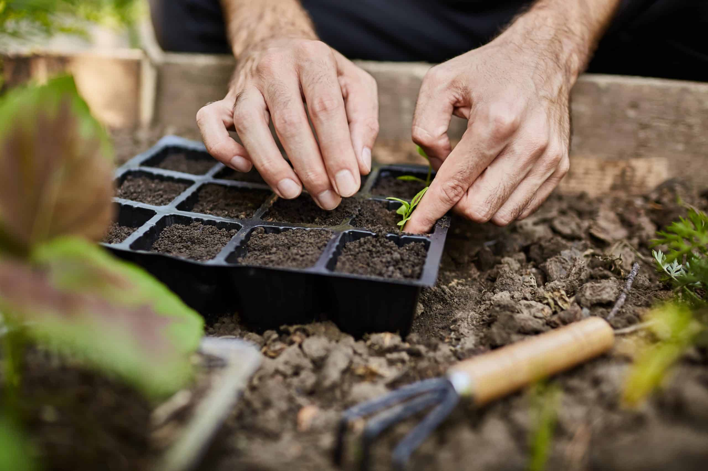

O Trabalho que Dignifica
Acreditamos na Laborterapia. O contato com a terra, a manutenção da casa e a produção de alimentos ajudam a reorganizar a mente e devolvem ao acolhido o senso de utilidade e responsabilidade.

Reforma Íntima e Oração
Através do Evangelho e da convivência fraterna, buscamos a Reforma Íntima. Não basta parar de usar substâncias; é preciso mudar o estilo de vida e reencontrar valores espirituais.